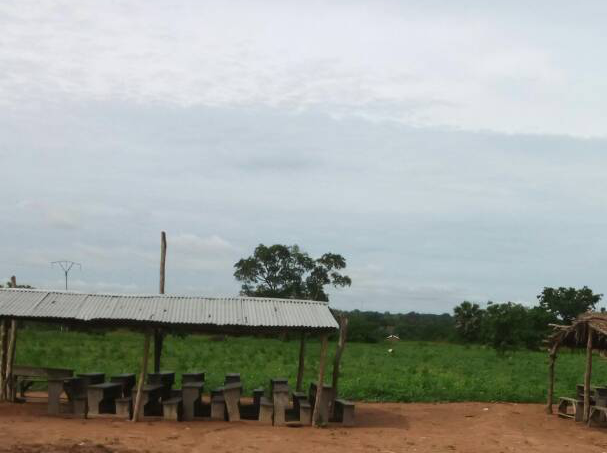
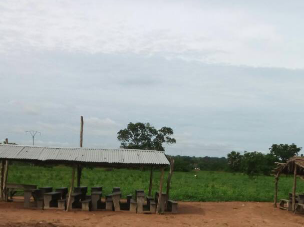

Projects
Schools PC Room
Country/territorial area / city where the project is carried out
The village of Alfa kope- Gaougblé is located in the prefecture of 'Est-Mono in the Plateaux region and is 248 km from the capital of Togo, Lomé. The village of Alfa kope- Gaougblé is led by a village chief aided by a village committee. The committee plays an important role in the operation of the village, a very poor village, not equipped with electricity, the houses are mud and straw, families are poor. The economy of the village of Alfa kope- Gaougblé is essentially based on the primary sector with predominance of agriculture and livestock. The food crops produced are: corn, sorghum, sweet potatoes, and cassal. Village populated by about 3000 people; In the village of Alfa kope- Gaougblé, a large number of school-age children do not go to school because the current structure has a very limited capacity. The structure appears to be clearly undersized compared to the village's minority population; overpopulation of classrooms creates a noisy and distracting environment where it is difficult for children and teachers to follow the lessons in a concentrated environment.
The Synthetic Objective: Expand access to the educational offer of children and young people in the village of Avakodja in Togo through the complete reconstruction of 3 classrooms.
Destina: Children in the village of Avakodja are currently excluded from the right to study and basic education.
sre a summary specification request: Construction and furniture of 3 classes of maximum capacity of 80 children each in place of the mud and straw classrooms that do not allow to accommodate a large number of students and that limit school attendance during the rainy season. Equip the school of Avakodja with bathrooms (distinct bathrooms for girls and boys). The new classrooms will increase the school population by at least 50 new children who are not admitted to school due to a lack of places especially girls.


Country/territorial area / city where the project is carried out
The village of KOUBOU-WORO is located in the Tchamba district in the central region and
328 km from Togo's capital, Lomé. The village of Koubou-woro is composed mainly of the Muslim community. Koubou-woro is led by a village chief aided by a village committee. The committee plays an important role in the operation of the village. In addition to the latter, the imam is a religious figure within the community. Very poor village, not equipped with electricity, the houses are made of concrete, mud and straw. Families are poor. The economy of the village of Koubou-woro is essentially based on the primary sector with predominance of agriculture and livestock. The food crops produced are: corn, sorghum, sweet potatoes, cassaa, rice, fonio, beans and peanuts. A village populated by about 2000 people, 60% of whom are under the age of 18. In the village of Koubou-woro 2 out of 3 children of which the majority of girls of school age do not go to school because the current structure has a very limited capacity, i.e. 62 places available, compared to about 209 minors who in various ways try to attend classes. All these children are followed by only three teachers. In this situation, males are given priority so most females stay at home. Children are put up to 4 for each bench (each bench is actually built to accommodate only two minors). This is done with the aim of putting as many children as possible into school. However, there are many downsides to this situation. First of all, the structure appears to be clearly undersized compared to the village's minority population; Secondly, the overpopulation of the classrooms creates a noisy and distracting environment where it is objectively difficult for children and teachers to follow and do lessons in a concentrated environment. Last but not least element is the absence of toilets in the property.
The main Synthetic Objective: Expand access to the educational offer of children and young people in the village of Koubou-woro by the complete reconstruction of the village school.
General Objective Contribute to the strengthening of the school and education system of the Koubou-woro community by increasing access to education for children in the village currently excluded from the right to study and basic education.
So expected results:200 children are included in the CP1-CP2, CE1-CE2, CM1-CM2 school cycles;
A school is built and consists of three classrooms for the elementary school, an office for the administration, is equipped with water (access to drinking water is near the school) and separate bathrooms for boys and girls;
This school will allow over time thousands of children from the village of Koubou-woro and the nearby villages to go to school and have an education.


 
